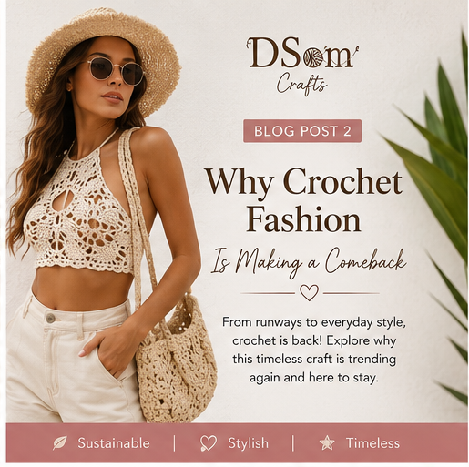
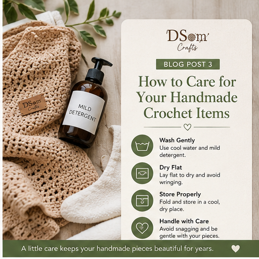
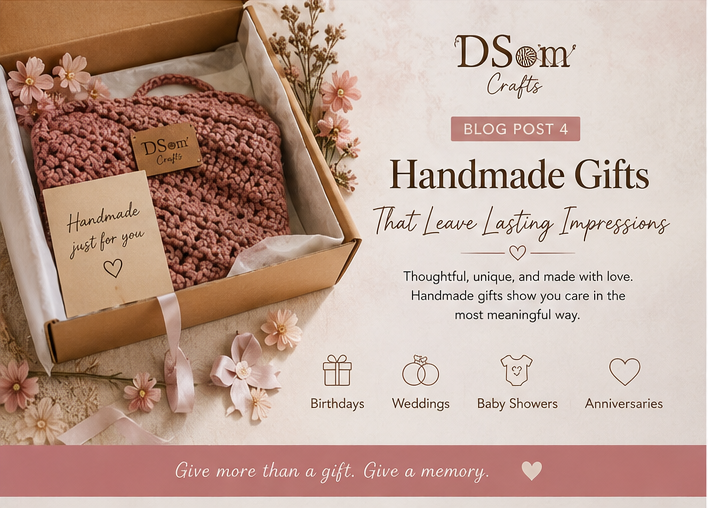
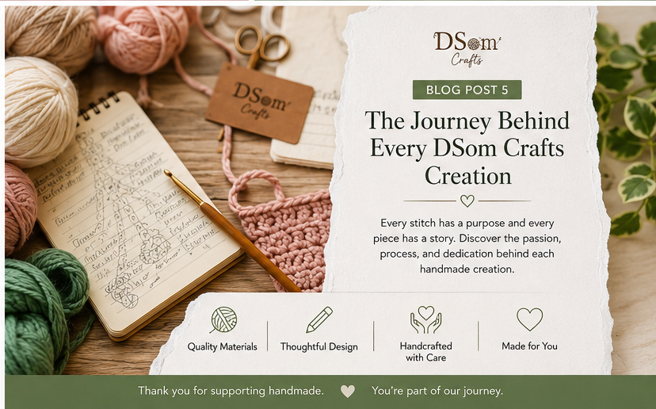

The Beauty of Handmade Crafts in a Fast-Paced World
In today's world of mass production and fast fashion, handmade crafts hold a special place.
Every handcrafted item tells a story of creativity, patience, and dedication.
Unlike factory-made products, handmade pieces are carefully created with attention to detail, making each item unique.
At DSom Crafts, we believe that handmade creations bring warmth and personality into everyday life.
Whether it's a crocheted sweater, a stylish handbag, or a decorative home accessory, each piece reflects the passion and skill of the artisan behind it.
Choosing handmade products also supports local craftsmanship and sustainable practices.
By investing in handmade items, you're not just purchasing a product—you're supporting creativity, preserving traditional skills, and owning something truly one-of-a-kind.
The next time you're looking for a special gift or a personal fashion statement, consider the beauty and value of handmade crafts. Your choice makes a difference.
Why Crochet Fashion Is Making a Comeback

Crochet fashion is no longer just a nostalgic trend, it has become a major statement in modern style. From runways to social media, crochet pieces are gaining popularity for their versatility, comfort, and unique aesthetic.
One reason for this resurgence is the growing demand for sustainable fashion. Consumers are becoming more conscious of where their clothing comes from and how it's made.
Crochet garments offer a handcrafted alternative to mass-produced fashion.
At DSom Crafts, we create crochet pieces that combine timeless craftsmanship with contemporary designs. Whether it's a chic crop top, a cozy cardigan, or a stylish handbag, crochet allows for endless creativity and personalization.
Crochet fashion isn't just clothing; it's wearable art. With custom colors, patterns, and designs, every piece becomes a reflection of personal style.
Ready to embrace the crochet trend? Explore DSom Crafts' collection and discover handmade fashion that stands out.
How to Care for Your Handmade Crochet Items

Handmade crochet items are crafted with love and care, and proper maintenance helps them stay beautiful for years. Here are some simple tips to keep your crochet treasures in excellent condition.
Wash Gently: Handwashing is the safest method for most crochet items. Use cool water and a mild detergent to prevent stretching or damage to the fibers.
Avoid Harsh Drying Methods: Never wring out crochet pieces. Instead, gently squeeze out excess water and lay the item flat on a clean towel to dry.
Store Properly: Fold crochet garments neatly and store them in a cool, dry place. Hanging them for long periods may cause stretching.
Handle with Care: Avoid snagging your crochet items on jewelry or rough surfaces, as this can pull the stitches and affect the design.
At DSom Crafts, we want every handmade piece you purchase to remain as beautiful as the day you received it. Proper care ensures that your crochet treasures continue to bring joy and style for years to come.
Handmade Gifts That Leave Lasting Impressions

Finding the perfect gift can be challenging, especially when you want something meaningful and memorable. Handmade gifts offer a personal touch that mass-produced items simply cannot match.
A handmade crochet bag, custom sweater, baby blanket, or home décor piece shows thoughtfulness and care. These gifts are unique, often customizable, and made with attention to detail.
At DSom Crafts, we specialize in creating handcrafted items that make every occasion special. Whether you're celebrating a birthday, wedding, baby shower, or anniversary, our handmade creations help you express your love and appreciation.
The best gifts are those that create lasting memories. A handmade item becomes more than just a present—it becomes a cherished keepsake.
This year, choose gifts that tell a story and make a lasting impression with DSom Crafts.
The Journey Behind Every DSom Crafts Creation

Every handmade item begins with an idea. At DSom Crafts, each creation goes through a thoughtful process before reaching our customers.
The journey starts with selecting quality materials and designing a piece that balances beauty, functionality, and durability. Every stitch, pattern, and detail is carefully crafted by hand to ensure exceptional quality.
Unlike mass-produced products, handmade crafts require patience and dedication. Hours of work go into creating each item, making every piece unique and valuable.
Our mission is to create products that inspire confidence, comfort, and joy. Whether it's a custom crochet outfit, an elegant accessory, or a decorative item, we take pride in delivering craftsmanship that reflects our passion.
When you purchase from DSom Crafts, you're supporting creativity, artistry, and a commitment to quality. Thank you for being part of our handmade journey.